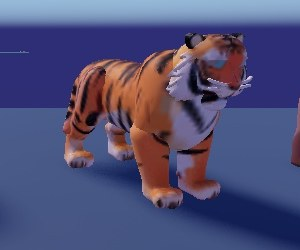
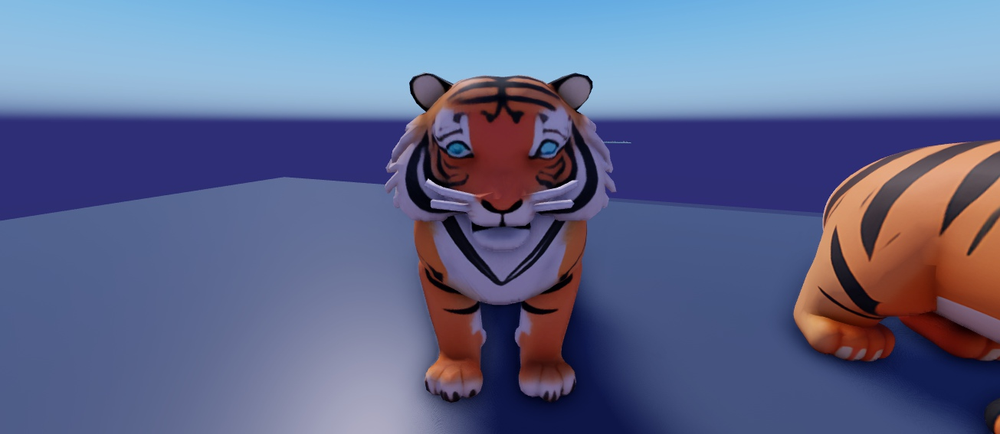
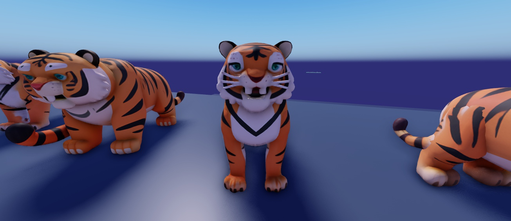

J'ai cherché d'où venait le flou. Deux causes, toutes les deux dans ma façon de faire les photos :
Studio affichait en qualité graphique automatique (basse), donc des textures floues.
Les créatures étaient minuscules dans l'image (4 par photo, puis découpées et agrandies).

Avant : la photo du croquis (qualité auto, petite, agrandie)

Le même tigre, rien de changé sur le modèle : qualité graphique max et gros plan

Essai d'une nouvelle génération (« texture haute résolution », 2,5× plus de polygones) : plus propre mais l'air un peu bête
En jeu, la netteté dépend aussi du réglage graphique du joueur (comme sur tous les jeux Roblox).
Ce que je propose : refaire toutes les photos du croquis comme celle du milieu (une créature par photo, en grand, qualité max). Ensuite tu juges vraiment les créatures. Si le style ne te va toujours pas, je pars sur tes images de référence.